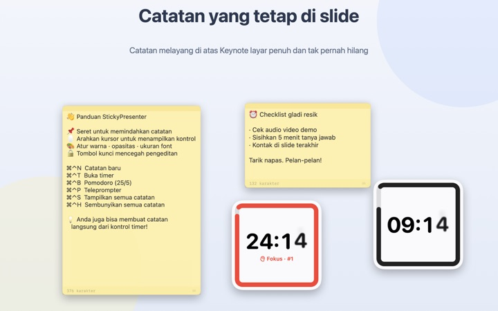
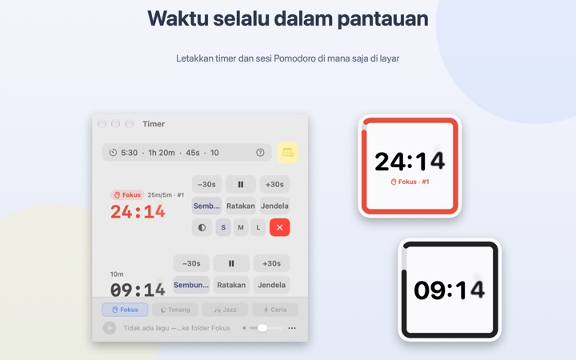
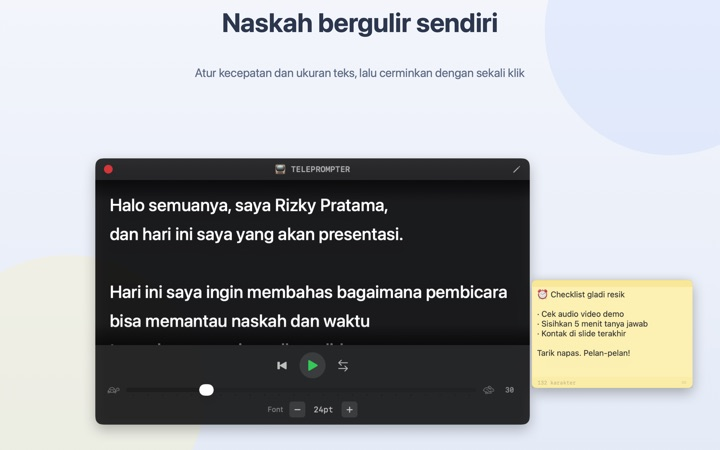
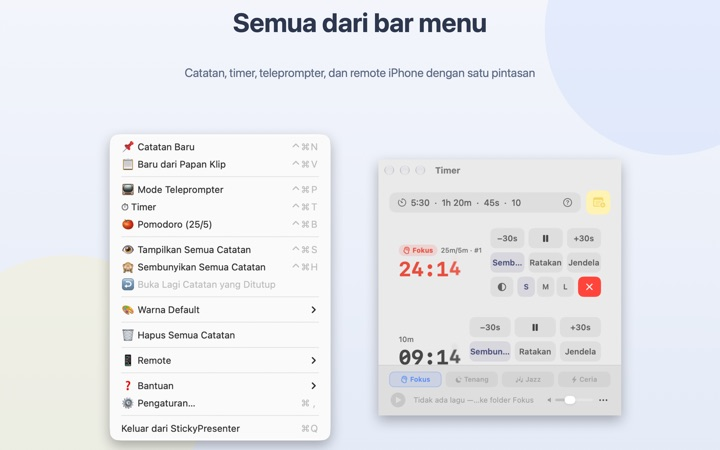

Naskah dan sisa waktu
langsung di atas slide
Jalankan Keynote dalam layar penuh, catatan dan timer tetap melayang di atasnya. Keduanya tidak merebut fokus dari app presentasi, jadi clicker tetap bisa mengganti slide seperti biasa.
Semua fitur gratis. Perlu macOS 14 atau lebih baru.

Coba di atas slide
Ketik waktu seperti di app. Ketuk 15s untuk melihat cara widget memberi tahu saat waktu hampir habis.
Saat presentasi, di mana Anda menaruh naskah dan jam?
Tampilan presenter butuh layar kedua, dan melirik jam tangan selalu ketahuan penonton. Mungkin Anda pernah menempel kertas di laptop lalu kertasnya jatuh. StickyPresenter menyematkan naskah dan sisa waktu tepat di atas slide, di tempat mata Anda memang tertuju.
Sekali lirik, langsung tahu sisa waktu
Widget persegi di pojok layar menampilkan sisa waktu. Warnanya berubah merah saat hampir selesai, lalu berbunyi dan bingkainya berkedip ketika waktu habis.
Ketik waktu sesukanya, misalnya 5:30 atau 1h 20m, atau ketik 25/5 untuk Pomodoro yang bergantian antara fokus dan istirahat. Buka timer di jendela tersendiri agar hanya jendela itu yang dibagikan lewat berbagi layar atau AirPlay.

Baca naskah sambil menatap kamera
Teleprompter menggulir naskah dengan kecepatan yang Anda atur dan berhenti sendiri di akhir. Salin naskah, tekan ⌘⌃P, dan teleprompter langsung terbuka dengan teks itu.
Ada mode cermin untuk perangkat teleprompter berkaca pantul, dan kecepatan serta ukuran huruf tetap tersimpan untuk lain kali.

Tak perlu meninggalkan slide
App berjalan tenang di bar menu, tanpa ikon di Dock dan tanpa jendela yang perlu diurus. Pintasan seperti ⌘⌃N untuk catatan baru dan ⌘⌃T untuk timer tetap jalan meski Keynote sedang layar penuh.
Di panggung, app iPhone gratis Remote Controller for Sticky bisa memulai dan menjeda timer, serta memindahkan widget yang menutupi slide.

Mulai dalam tiga langkah
- 1
Buka app
Ikon catatan muncul di bar menu, dan panduan singkat terbuka saat pertama kali.
- 2
Pasang catatan dan timer
Salin naskah lalu tekan
⌘⌃V, kemudian ketik durasi presentasi di kolom timer. - 3
Masuk layar penuh
Catatan dan timer tetap berada di atas.
Pintasan dan format waktu
- ⌘⌃N
- Catatan baru
- ⌘⌃V
- Catatan baru dari papan klip
- ⌘⌃T
- Tampilkan atau sembunyikan timer
- ⌘⌃B
- Mulai Pomodoro (fokus 25 menit, istirahat 5 menit)
- ⌘⌃P
- Teleprompter
- ⌘⌃S · ⌘⌃H
- Tampilkan atau sembunyikan semua catatan
- 10
- Angka saja berarti menit (10 menit)
- 5:30 · 1:15:00
- Menit:detik, jam:menit:detik
- 1h 20m · 45s
- Dengan satuan
- 25/5
- Fokus/istirahat, berulang sampai Anda hentikan
Semua pintasan memakai Command (⌘) dan Control (⌃) bersamaan, dan tetap berfungsi saat Anda berada di app lain. Timer bisa diatur hingga 99:59:59.
Semuanya gratis
StickyPresenter (Mac)
- Catatan dalam enam warna, dengan transparansi, ukuran huruf, dan kunci edit
- Hitung mundur, Pomodoro, dan widget di Pusat Notifikasi
- Teleprompter dengan mode cermin
- Musik latar yang mulai bersama timer
- Pintasan yang berfungsi dari app mana pun
Remote Controller for Sticky (iPhone)
- Mulai, jeda, serta tambah atau kurangi 30 detik
- Ubah ukuran dan posisi widget langsung dari panggung
- Timer 3, 5, 10, atau 15 menit dengan sekali ketuk
App terpisah yang gratis. Perlu iOS 17 atau lebih baru dan StickyPresenter yang sedang berjalan di Mac pada Wi‑Fi yang sama.
Tidak ada fitur yang dikunci di balik pembelian. Kalau app ini membantu, Anda bisa memberi tip kepada pengembang di Pengaturan.
Pertanyaan umum
Bisakah saya menampilkan timer saja saat berbagi layar atau mirroring?
Bisa. Tombol Jendela di baris timer membukanya sebagai jendela biasa. Jendela itu lalu muncul di daftar jendela untuk berbagi layar dan AirPlay, jadi Anda bisa membagikan jendela itu saja.
Saya menyembunyikan widget timer dan tidak bisa menemukannya.
Di jendela timer, arahkan penunjuk ke baris timer tersebut, lalu posisi widget akan ditandai dengan garis putus-putus. Klik Ratakan untuk mengembalikannya ke samping jendela timer.
Saya tidak sengaja menutup catatan.
Pakai Buka Lagi Catatan yang Ditutup di bar menu untuk memulihkan salah satu dari 20 catatan terakhir. Catatan tersimpan saat Anda mengetik dan kembali ke posisi yang sama ketika app dibuka lagi.
Pintasan tidak berfungsi.
Jika tabel pintasan di panduan menandainya Dipakai aplikasi lain, artinya app lain sudah mengambilnya lebih dulu. Tutup app itu dan pintasan akan berfungsi lagi. Izin Aksesibilitas tidak diperlukan.
Kenapa tema Bunglon meminta izin Perekaman Layar?
Bunglon membaca warna layar di belakang widget untuk menyesuaikan diri, dan untuk itu perlu izin tersebut. Tidak ada yang disimpan atau dikirim. Tanpa izin itu, tema Sistem, Terang, dan Gelap tetap berfungsi normal.
Bagaimana cara menambahkan musik latar?
Pilih suasana (Fokus, Tenang, Jazz, atau Ceria) di bilah musik di bagian bawah jendela timer, dan app akan membuat folder untuk masing-masing. Masukkan lagu Anda sendiri ke sana, lalu lagu diputar berurutan bersama timer. App tidak menyertakan musik.
Remote di iPhone tidak menemukan Mac saya.
Periksa berurutan: StickyPresenter sedang berjalan di Mac (lihat ikon di bar menu); kedua perangkat ada di Wi‑Fi yang sama, bukan jaringan tamu atau data seluler; Jaringan Lokal sudah diizinkan di Privasi & Keamanan pada iPhone dan Mac; VPN dalam keadaan mati.
Remote bilang kode pemasangan salah.
Masukkan kode empat digit yang sedang tampil di menu Remote pada bar menu Mac. Jika Anda sudah mengeklik Kode Pemasangan Baru, hanya kode baru yang berlaku. Setelah dipasangkan sekali, remote langsung terhubung begitu app dibuka.
Apakah orang lain bisa mengendalikan timer saya?
Tidak tanpa kode Anda. Mac hanya menerima remote yang memasukkan kode yang benar, melalui koneksi langsung terenkripsi di jaringan lokal. Jika ada yang sempat melihat kode, pilih Kode Pemasangan Baru atau Lupakan Remote yang Dipasangkan di menu Remote.
Di mana catatan dan naskah saya disimpan?
Hanya di Mac ini. Tanpa akun, tanpa iklan, dan tidak ada yang dikirim ke internet selain statistik penggunaan anonim dan masukan yang Anda kirim sendiri.
Ada pertanyaan, bug, atau ide? Kirim email ke mizzking75@gmail.com.